FlowDeckAI workspace for operations teams
Work that moves itself. - AI workspace for operations teams UI/UX case study
FlowDeck reads every incoming request, routes it to the right person or AI agent, and keeps the whole team in flow.
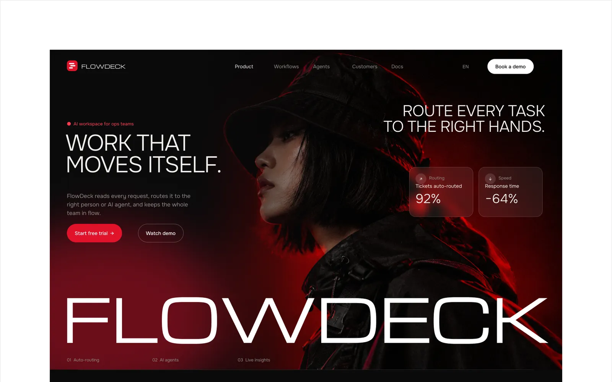
01Overview
FlowDeck reads every incoming request, routes it to the right person or AI agent, and keeps the whole team in flow.
FlowDeck is an AI workspace for operations and support teams. Requests arrive from email, Slack, forms and APIs; FlowDeck reads and tags them, decides whether a human is needed, routes them to an owner or an AI agent and tracks SLAs until they are resolved. I designed the brand, the user flow, wireframes, the web dashboard, the mobile app, the marketing website and the design system in three weeks.
02The challenge
What had to be solved
Ops teams get requests from email, Slack, forms and ten other tools. Someone has to read each one, find the owner and chase it, and hours disappear before work even starts. SLAs slip because nobody sees the bottleneck in time.
Design goals
- One inbox for every request, whatever the source
- Let AI handle the repeatable work with a human in the loop
- Show SLAs and bottlenecks before they become fires
- Give the product a bold, premium brand
03Process
How I approached it
- Map the journeyRequest arrives, AI reads and tags it, then routes to a human for review or an AI agent with an auto-check.
- Lo-fi firstWireframes for the inbox, workflow builder and insights fixed the structure.
- Dashboard and mobileWorkflows, inbox, a visual workflow builder and insights on web; inbox, request and approvals on mobile.
- Brand and siteA red-on-black identity, a marketing website and a Behance showcase.
04Brief and user flow
From request to resolved.
The cover sets the brief and deliverables. The user flow shows the core journey: a request arrives, AI reads and tags it, and a decision point sends it to a human reviewer or an AI agent before it is resolved and logged.
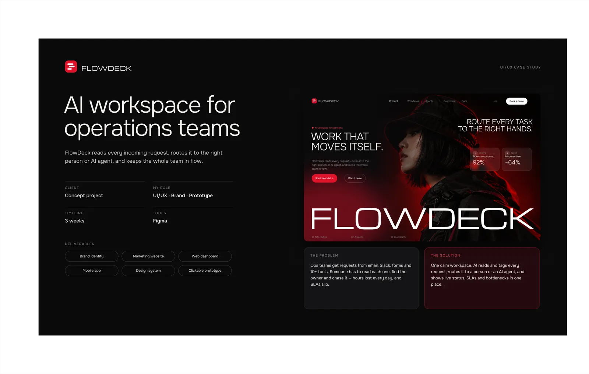
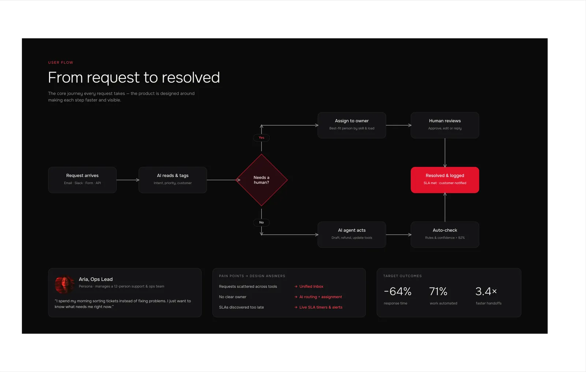
05Wireframes
Structure before style.
Low-fidelity wireframes for the dashboard and mobile app tested the layout of the inbox, request detail and workflow pages before the visual design.
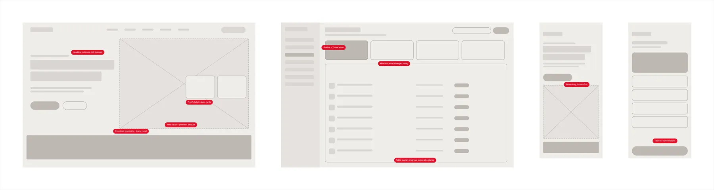
06Web dashboard
Every workflow, every request, one place.
Workflows lists every automation with progress, status and agents. The inbox shows requests with tags and SLA timers beside an AI panel that suggests intent, confidence and the next action.
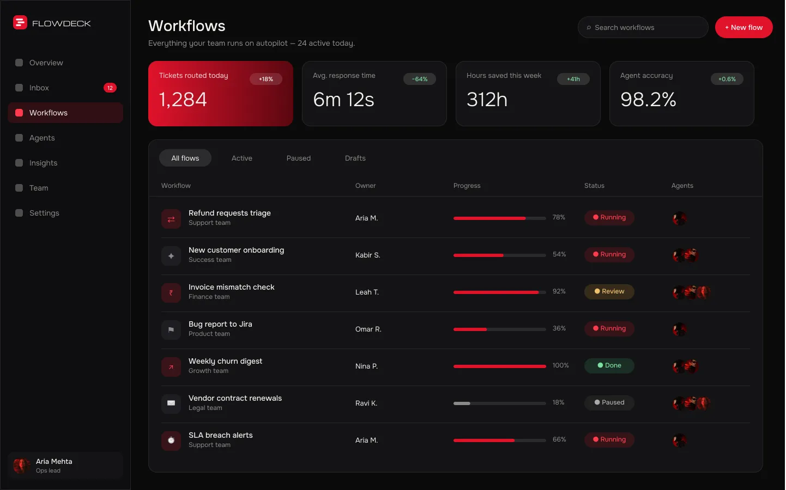
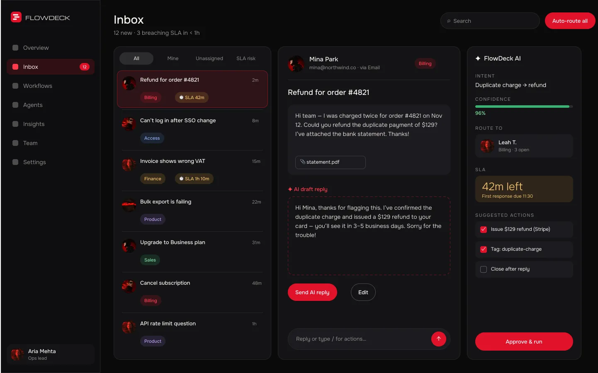
07Workflow builder and insights
Build automations visually, watch them work.
The builder lays out triggers, AI steps, conditions and human approvals as connected cards. Insights tracks requests handled, response time, automation rate and SLA risk by hour.
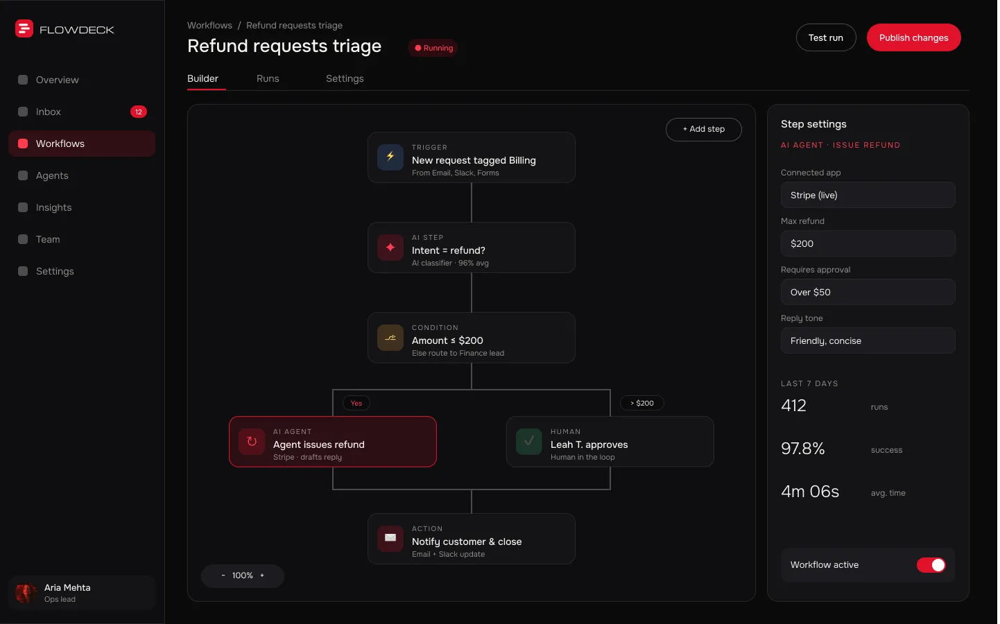
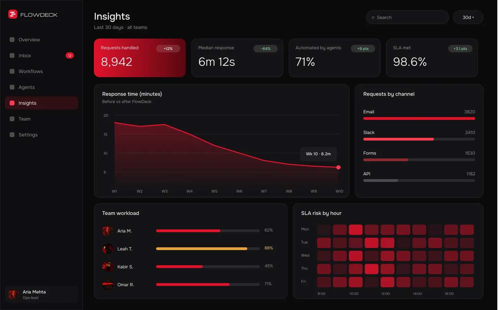
08Mobile app
Approve from anywhere.
The mobile app brings the home summary, the inbox, a request detail with the AI suggestion and an "Approve & run" button, live insights and the feature overview to the phone.
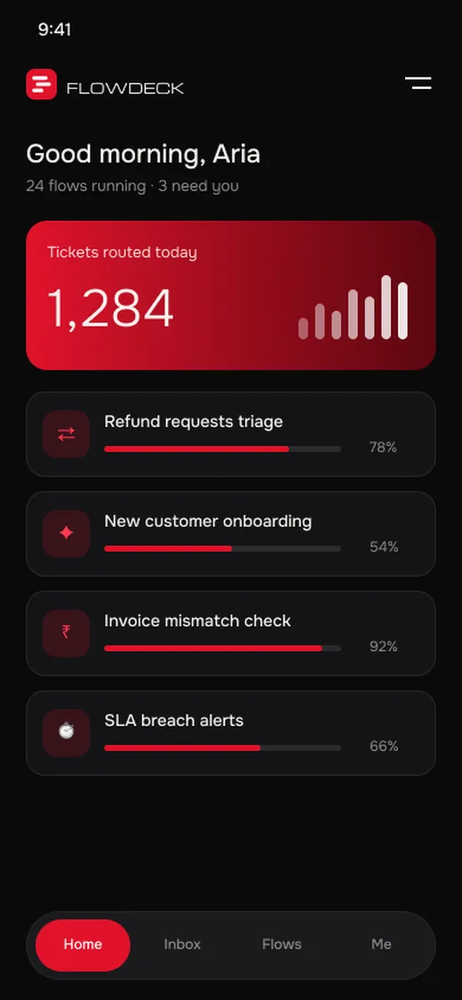
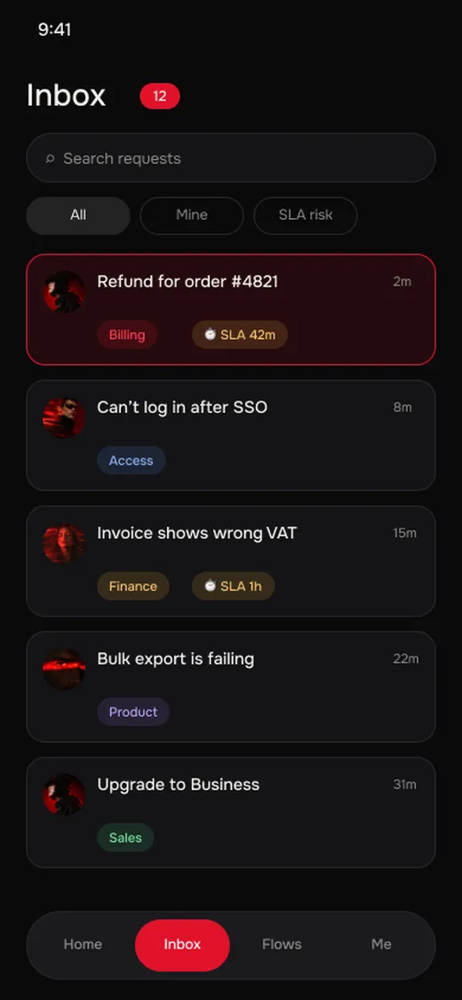
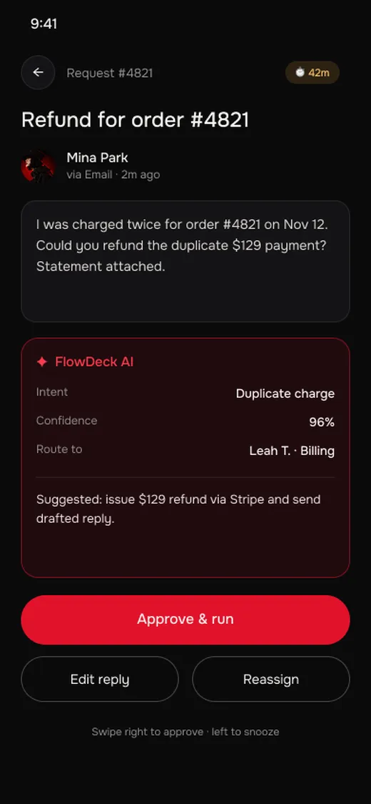
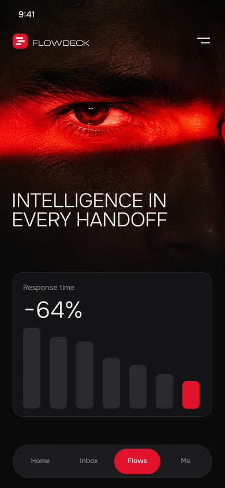
09Marketing website
A site as bold as the product.
The marketing website opens with "Work that moves itself" over a striking portrait, then explains routing, automation, insights and integrations with product screenshots and clear calls to action.
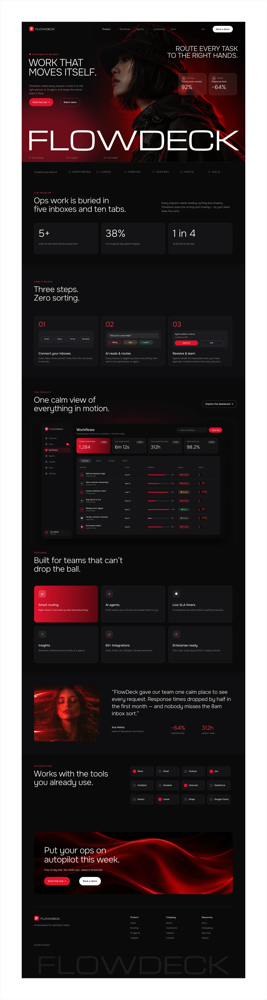
10Brand and showcase
Red on black, built to be remembered.
A bold wordmark, red light-trail imagery and device mockups carry the identity across the laptop, phone and presentation boards.
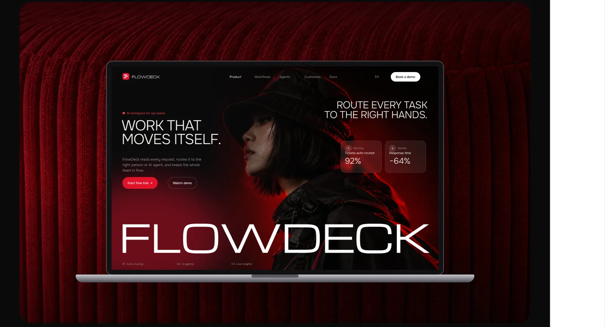
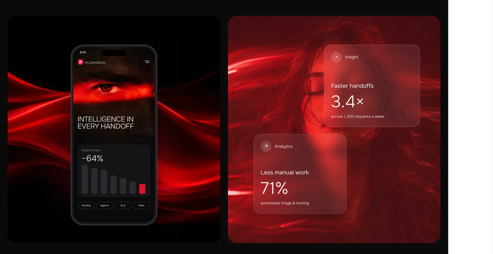
11Decisions
Key design decisions
AI suggests and acts, but every risky step has a clear approve, edit or reassign choice.
A small timer chip turns hidden deadlines into something the team sees all day.
Red marks AI moments, primary actions and risk, so it never becomes noise on a dark interface.
12Design system
Visual language
A near-black interface with one signal red, neutral greys for structure, Onest for the interface and a wide display face for the wordmark and headlines, plus status chips, SLA timers, tables and charts as shared components.
TypeOnest + wide display
13Outcome
What was delivered
FlowDeck is a complete AI SaaS concept: a brand, a user flow, a web dashboard, a mobile app, a marketing website and a design system, all built around one idea, that every request should find its owner on its own.
If the project continues, next I would:
- Design onboarding for connecting email and Slack
- Add an agent performance report
- Test the workflow builder with ops leads
Next project
HalcyonWeightless, by design.View project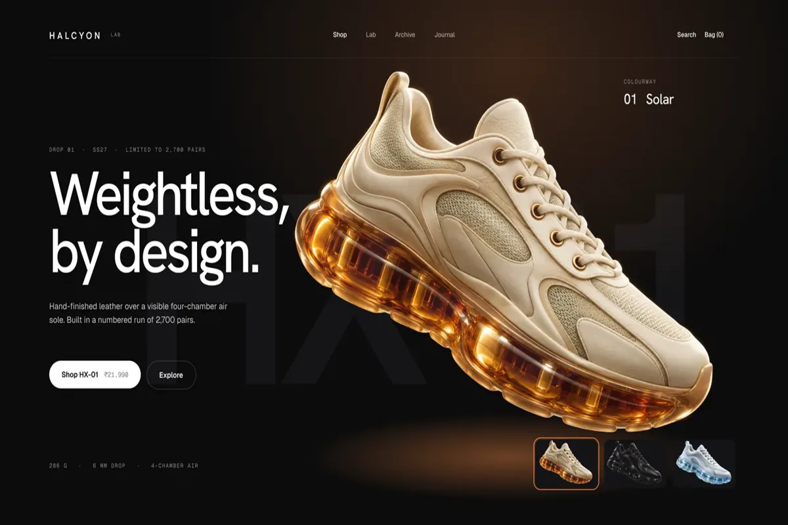